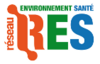

|  | Le cancer est devenu la première cause de mortalité. Son incidence a doublé en 25 ans et il frappe aujourd’hui un homme sur deux et une femme sur trois. Le cancer de l’enfant progresse, preuve que le phénomène n’est pas la simple conséquence du vieillissement. |
L’obésité et le surpoids touchent maintenant un tiers de la population générant un ensemble de maladies chroniques, et au premier chef, le diabète dont le nombre a doublé en 10 ans...
Le fossé est ainsi de plus en plus béant entre la réalité de ces épidémies modernes que vivent les Français et la faiblesse des politiques publiques pour y faire face et agir sur les causes environnementale (extraits de l'Appel du RES).
Nous affirmons qu’il est grand temps de changer de logique et de considérer comme primordiale la relation de l’homme à son écosystème, afin de faire du lien environnement-santé le cœur de la politique de santé et de la politique de l'environnement.
Le Réseau Environnement Santé a pour vocation de rassembler tous ceux qui se reconnaissent dans cet objectif : organisations de la société civile et personnes (citoyens, professionnels de la santé et scientifiques).
Pour la 1ere fois en France, des ONG, des professionnels de la santé, des malades, des scientifiques et des citoyens se rassemblent dans un Réseau Environnement Santé : le RES.Le RES est lancé sous l'égide de l'Alliance pour la Planète et plus particulièrement des ONG suivantes : WWF France, Fondation Sciences Citoyennes, MDRGF, Fac Verte, Objectif Bio et Nord Ecologie Conseil. Les autres membres fondateurs sont respectivement des associations de professionnels de la santé et des associations de malades et de victimes : la CNMSE (Coordination Nationale Médicale Santé Environnement), le C2DS (Comité pour le Développement Durable en Santé) et SOS MCS (Association des Personnes atteintes du Syndrome d’Hypersensibilité Chimique Multiple). Les réseaux européens HEAL (Health And Environment Alliance) et WECF (Women in Europe for Common Future) soutiennent le RES. |
Objectifs: travailler en direction des pouvoirs publics pour les faire évoluer sur ce thème de la santé et de l'environnement... et le travail ne manque pas! Citoyens, nous avons du pouvoir! : Parce que nous croyons que chacun peut contribuer à faire évoluer les choses, nous vous invitons à prendre part à différentes actions! Alors n'attendez plus, agissez! Particpez à la Cyberaction sur le BPA : Pour l'interdiction du BPA dans les plastiques alimentaires, particIpez à la Cyberaction et écrivez à Madame Roselyne Bachelot, Ministre en charge de la Santé et de Monsieur Jean-Louis Borloo Ministre en charge de l’Environnement. |